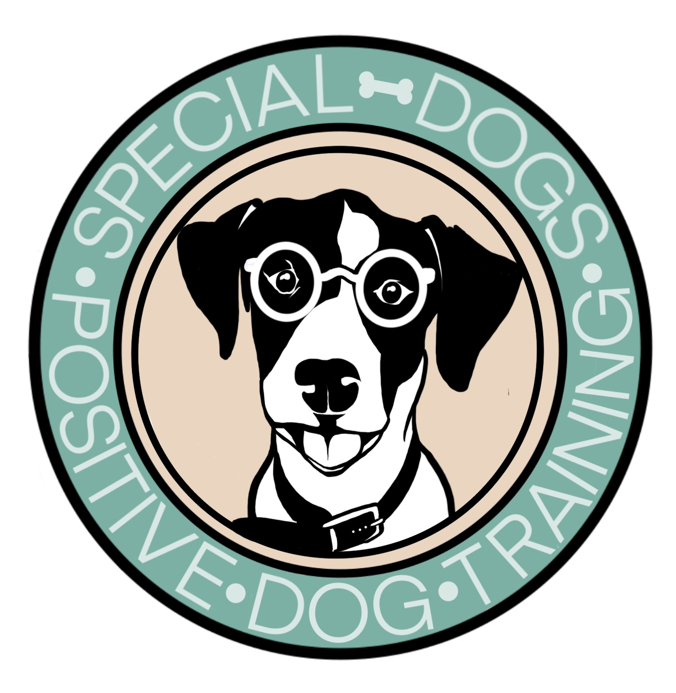
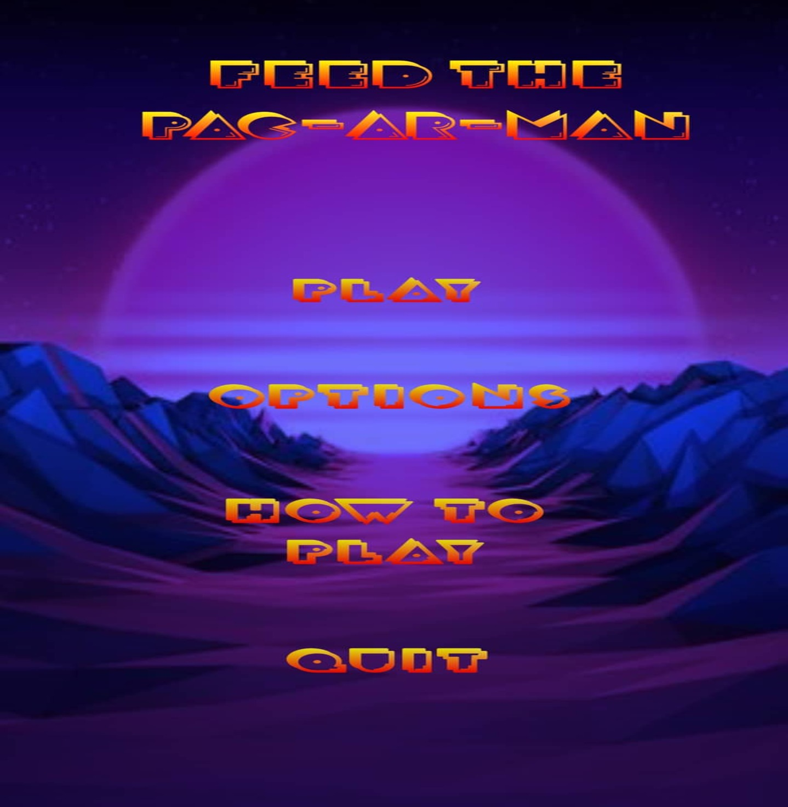

Hello! I'm Drakos Apostolos, a passionate developer from Greece,
born in 1996. I love turning ideas into reality through code
and enjoy creating new, meaningful digital experiences.
My passion for computers and technology began in my teenage years.
Today, I focus on developing websites and applications, always
driven by a desire to create innovative and user-friendly solutions.
I am actively seeking new opportunities to grow as a developer,
contribute to meaningful projects, and collaborate with others.
My ability to quickly adapt to new technologies, along with my
team-oriented mindset, makes me a valuable addition to any organization.
Work Experience
Frontend Developer – Keyvoto
November 2025 – Present | Athens, Greece
- Develop and maintain responsive web applications using Angular and Tailwind CSS.
- Build reusable and scalable UI components.
- Implement modern UI/UX designs with a focus on performance and maintainability.
- Collaborate with cross-functional teams to deliver high-quality software solutions.
Technologies: Angular, TypeScript, Tailwind CSS
Software Developer – Mindseed
December 2023 – November 2025 | Athens, Greece
- Developed web applications using HTML, CSS, JavaScript, and ASP.NET.
- Integrated REST APIs and handled asynchronous data.
- Used Git for version control and collaboration.
- Participated in team projects and code reviews.
Technologies: HTML, CSS, JavaScript, ASP.NET, Git
Customer Service Agent – ICAP
September 2023 – November 2023 | Athens, Greece
- Handled customer inquiries and provided efficient customer support.
- Developed communication, teamwork, and problem-solving skills.
- Maintained professionalism while working in a fast-paced environment.
Personal Projects

Responsive Website
This is a website built using WordPress and the Avada theme.
It features a responsive design and user-friendly functionality,
providing a digital space that meets the needs of its users and clients.

Android Application – Unity Engine
Feed the PacArMan is an Android game based on augmented reality.
I developed it with my fellow student, Ioannis Kounatidis.
The game was created for educational purposes and is available on Google Play.